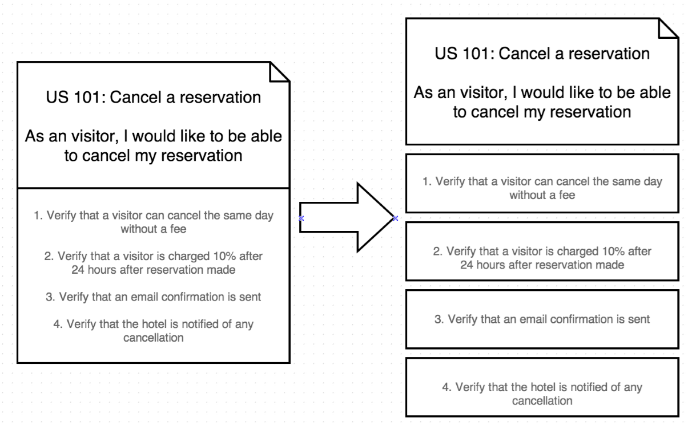

Working with Legacy Code
Amri HidayatMy Github
My LinkedIn


Scrum
Delivering the highest business value in the shortest time
Scrum Roles
- Scrum Team
- Product Owner
- Scrum Master
Scrum Ceremonies
- Sprint Planning
- Daily Standup
- Product Review
- Process Review
Agile Values
- Focus
- Courage
- Openness
- Commitment
- Respect

Agile Best Practices
Topless Meetings
Why Successful People Never Bring Smartphones Into Meetings1
- Lack of respect
- Lack of attention
- Lack of listening
- Lack of power
[1] http://www.forbes.com/sites/kevinkruse/2013/12/26/why-successful-people-never-bring-smartphones-into-meetings/
Ad-hoc & Frequent Communications
Face 2 Face > Video Conference > Phone > Message Chat > Nothing
Smaller Handoffs
Problem: By the time we finished delivering a feature, it's already too late for QA to do any acceptance testing (let alone regression testing)
Transfer small tasks frequently. Once a developer finished with one acceptance criteria, hand it over to QA to test just that criteria. The developer could continue with the next acceptance criteria
Smaller Handoffs (continued)


Smaller Handoffs (continued)
Product Review
- Tell, don't show (describe what the user story is about)
- Describe the impact (business value) of the functionality being presented
- If everything goes haywire ? Show the automated test result
Swarming
- Helps on knowledge sharing between team member. Also helps reducing communication between team member <> product owner.
- Boost confident of the team on taking/conquering more complex problem (mission critical applications)
- Collective Ownership of the whole application
Is scrum not your cup of tea ?
relax, we have other agile methodologies that might suit to your taste
- Feature Driven Development
- Kanban
- eXtreme Programming